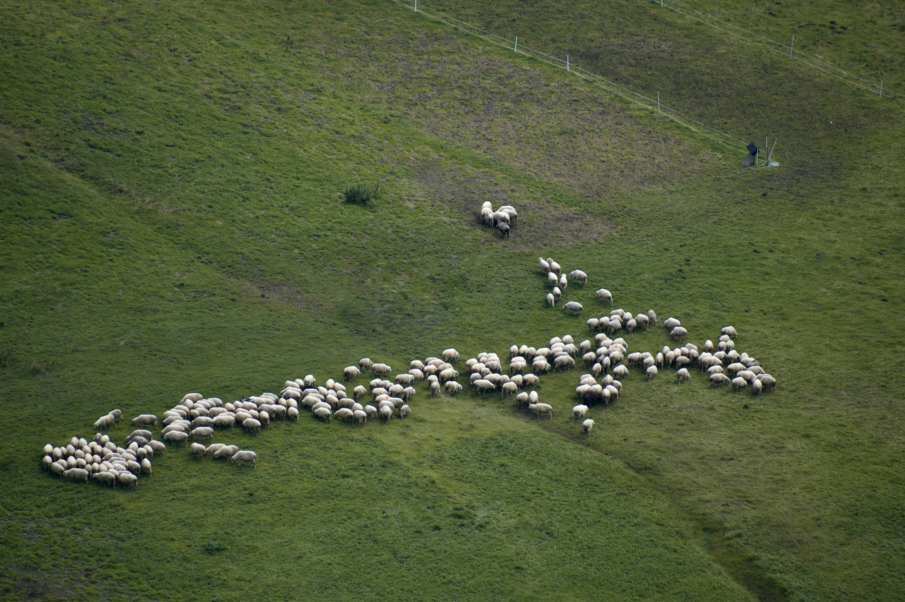

Count your flock from the kitchen
Solar ear tags count the sheep on the hill every ten minutes. If some wander off, you see where they went and when.
Book a farm visitSee a live hill
We tag the flock with you. Farms from 120 ewes.
5 wandered off
140 m above the flock, since 06:52
0412, 0415, 0388, 0521, 0530
Text Marek to bring them downHe is at the hut, 600 m away
207 together410 m from end to end
Fence 7.4 kVchecked 07:00
Hala Gąsienicowa, counted 07:04